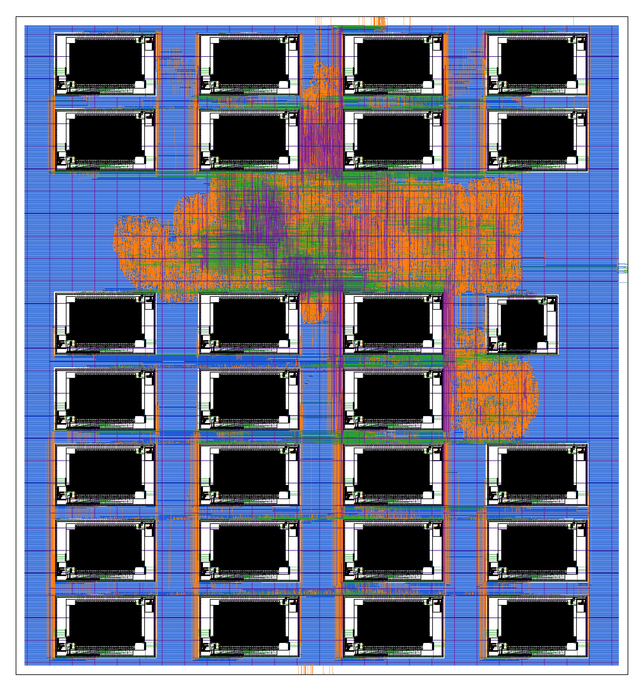

Projects / BLogic MCU
BLogic MCU
A 32-bit RISC-V microcontroller with a hardware accelerator for keyword spotting, designed by the BLogic Microelectronic team of Ostim Technical University. The same RTL runs on a Genesys 2 FPGA at 50 MHz and is signed off as a sky130 chip layout. Click through the system below: its blocks, how it boots, and what happens during one inference.
01 · The system
Inside the chip
Click a block to see what it does and how the core reaches it, or play the boot and one inference step by step. The addresses are the real ones of the memory map.
← swipe the figure sideways →
Memory map · click a row
02 · The accelerator
A keyword-spotting network in hardware
The accelerator runs the TensorFlow Lite Micro Speech “tiny conv” model: about one second of audio features in, one of four classes out. It computes with INT8 × INT8 → INT32 multiply-accumulates and requantizes exactly the way the TFLite interpreter does.
03 · From RTL to silicon
One design, two implementations
The same RTL becomes a bitstream for a Kintex-7 FPGA and a sky130 layout through LibreLane. Click a numbered region of the layout to see what sits there.

The delivered GDS, 4.18 × 4.49 mm, with the power grid and the fill cells hidden. The outlines are approximate, after the placement description in the documentation.
04 · How it was checked
Every test explains itself
Each simulation test ends with a report of what it proves, every check it made and every register it touched. The whole suite runs on GitHub Actions at every push.
make test-all, including the JTAG debug tests with OpenOCD and gdb05 · Try it
One command
The Docker image holds Verilator, Spike, the RISC-V GCC toolchain and the sources. Its default command boots the SoC model, prints over UART_0 and runs one inference on the accelerator, in about half a minute.
docker run --rm ghcr.io/blogic-microelectronic/blogic-mcu
From a clone (use git clone --depth 1: the history holds large
physical-design files), make compile && make sim prints
“Hello World from BLogic MCU!” and make help lists
every target.
Credits
BLogic MCU was designed by the BLogic Microelectronic team of Ostim Technical University, Berk Muammer Kuzu and Berkin Demircan, for the microcontroller category of the TEKNOFEST 2026 Chip Design Competition. It is open source hardware under the GPL-3.0, certified by the Open Source Hardware Association as TR000011 (version 1.1, 22 October 2026). The processor core comes from the OpenHW Group, the AXI library and the debug module from the PULP platform, the UART core from Alex Forencich, and the speech model from TensorFlow Lite Micro.